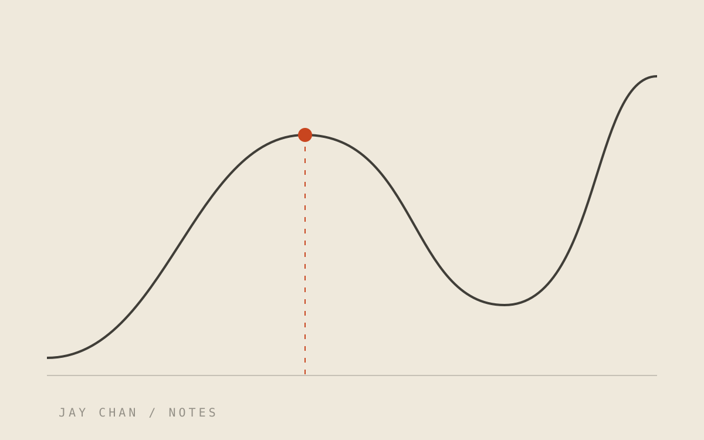
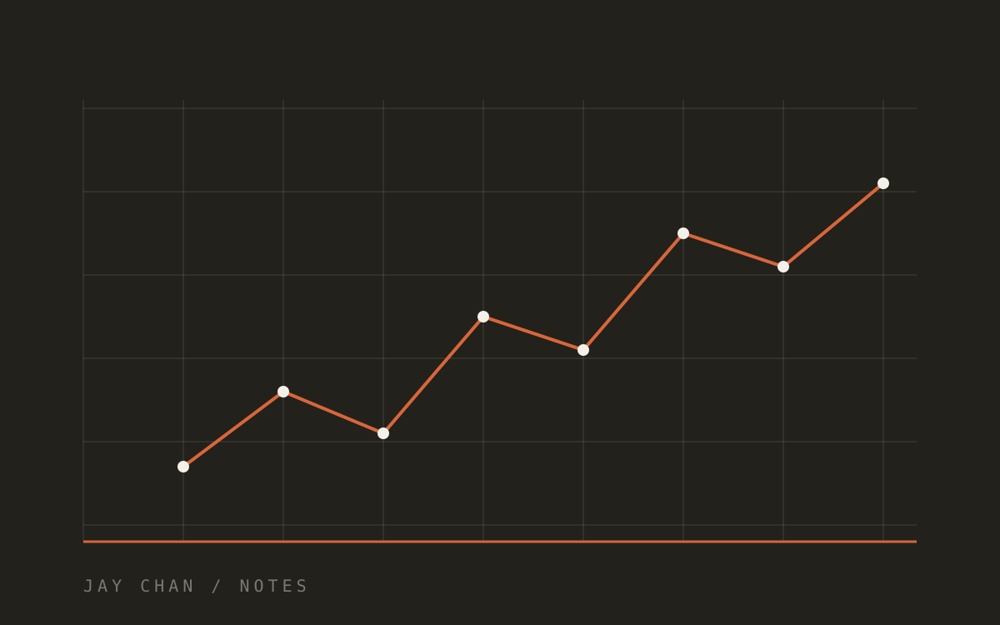

Writing · Medium
Notes from the work.
Evals, calibration, and the parts of machine learning that decide whether a model is actually useful.
How good is the SOTA summarization?
Estimating the performance of the latest SOTA language model in summarisation, and what the score does not tell you.
Read on MediumAdapter and AdapterHub for transformers
Fine-tuning a whole transformer is not always the efficient path. Training on part of it often does most of the job.
Read on Medium
Double descent or bias-variance trade-off?
Over-parametrization was a pitfall with little data. Now it looks like the direction the next generation of models depends on.
Read on Medium
More about model calibration
Where accuracy and predicted confidence drift apart, and the practical ways to close the gap before it costs you.
Read on Medium